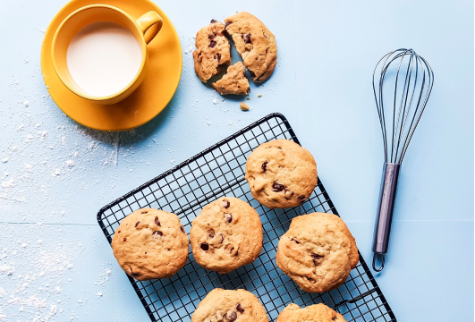

While making a healthier cookie may not sound as appealing as a cookie that is packed with sugars, fats, or sweet candy, it is possible to make a healthy cookie that still tastes good. It might be somewhat hard to fathom, but there are healthy ingredients and substitutes that can be added to cookies so they maintain their flavor, but are not as bad for you. Implementing simple changes into your current family cookie recipe can help you stick to your diet and give you just the little bit of sweet that you are craving to make it to your next meal.
With so many people turning to health conscious lifestyles, cookies do not have to be thrown out of your diet entirely. Instead consider some of the following tips to help make your family some healthier cookies.
1. Add Dried Fruit
For recipes that call for chocolate chips or any kind of extra sugar-based additives consider adding in pieces of dried fruit to your cookies. Dried fruits are healthy to consume and contain natural sugars that will still give your cookies a bit of a sweet flavoring. You can choose fruits that will compliment the other flavors in your cookies, or simply experiment with various fruits that you can find at the grocery store. Here are some dried fruits that are commonly used in cookie baking and can be found at your local grocers or farmers market:
Cherries
Raisins
Figs
Prunes
Cranberries
2. Think Whole Grains
Fiber is an important part of a healthy diet, so why not incorporate fiber into your cookies? Replace your all-purpose flour with much healthier wheat flour when baking your cookies from scratch. Even if you replace half of the entire flour amount that is recommended for a recipe with whole wheat flour then you are making a healthier cookie. The wheat flour will make your cookies denser than they would be with all-purpose flour, thus carrying more nutritional value and fitting into your diet just a little bit better.
Another trick that some bakers use to add nutritional value to cookies is adding oats to the mixture. The oats will give the cookie a crunchy texture and can add additional fiber to your cookies.
3. Substitute your other Ingredients
Think of all the ingredients that you use to make your typical cookie recipe. Now, think of better ingredients that can make your cookies just a little healthier but taste as good as they are normally. The replacement of just a few different ingredients you can make a healthy cookie. Consider some of the following ingredient replacements for your healthy cookie batch:
Replace the oil and butter from your cookie recipe with applesauce
Replace eggs with an egg substitute or even just egg whites
Replace milk chocolate chips with semi-sweet chocolate pieces instead
Replace white sugar with sucanat (sugar cane) or stevia
Remember that if you want to get healthy, you have to think and make healthy food. With these simple tips you can transform what would otherwise be an unhealthy, sugar-filled, fattening cookie into a healthier, lightly sweetened cookie snack.

Categories: Health